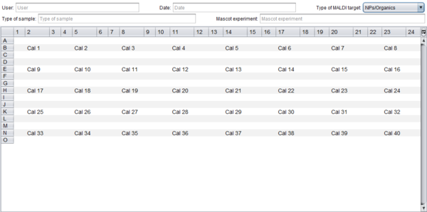

Maldi plate
Maldi plates can be edited using the Maldi plate editor.
Maldi plate editor
The Maldi plate editor allows you to:
- Define metadata related with the experiment such as the user or the date.
- Type the element which you plan to put in each plate position.
- Export the plate as PDF or CSV.
- Save the plate for further uses in S2P.

Maldi plate editor
(click in the image to enlarge)
To export or save the plate you must click the  button, which will show you the following options:
button, which will show you the following options:
- Export as PDF: allows you to print the plate into a PDF file.
- Export to CSV: allows you to save the plate into a CSV file.
- Save plate: allows you to save the plate in MPL format so that it can be loaded in S2P later using the Load plate operation.